Chapter 2 Account Management
2.1 Registering a new account
To get started, navigate to data.nsercresnet.ca and click “Register” in the top right.
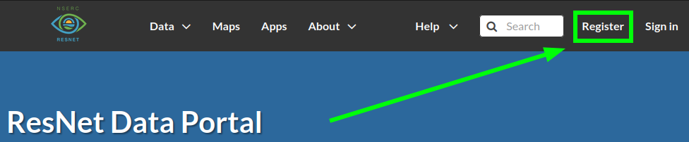
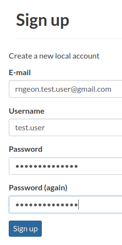
- E-mail: Address to affiliate with your account. This is where the system will send notifications.
- Username: Your username should follow the pattern
firstname.lastname(egjohn.clark). - Password: Create a strong password unique to this account. Consider using a password manager like Bitwarden.
Email notifications are sent from resnet.data.portal@gmail.com. Remember to check your spam folder!
Once you’ve signed up, a notification will be sent to the Data Portal Administrators to activate your new account. This may take some time (normal working hours).
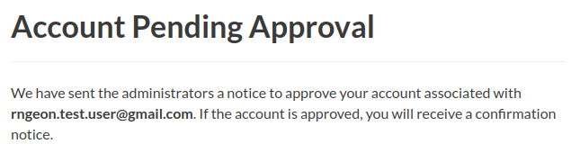
After your account has been activated, you will receive an email notification.
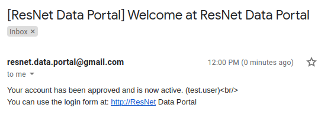
You can now sign in to the Data Portal using the credentials you’ve created.
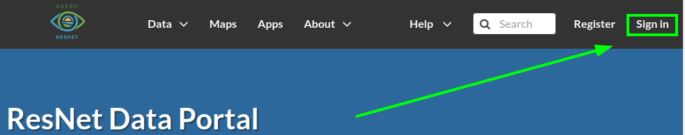
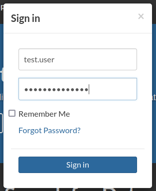
2.2 Managing your profile
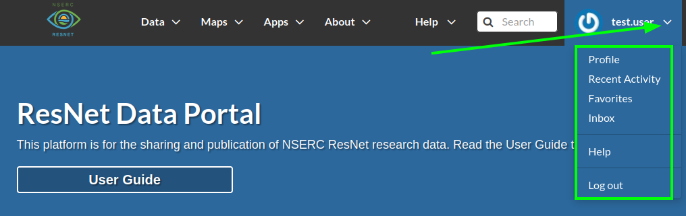
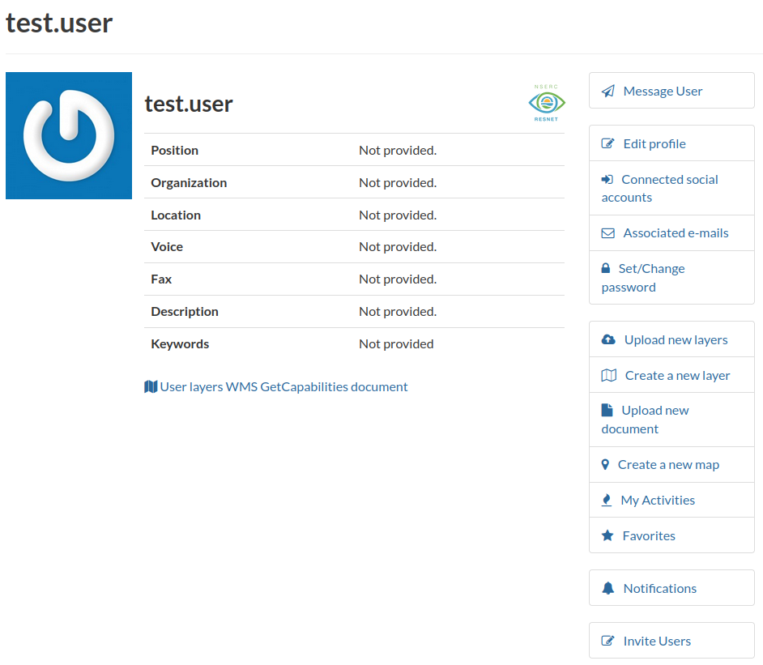
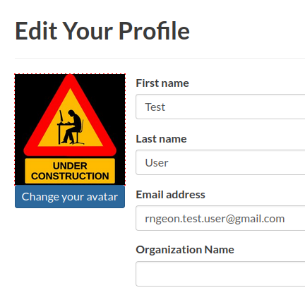
2.3 Joining a group
Navigate to About > Groups
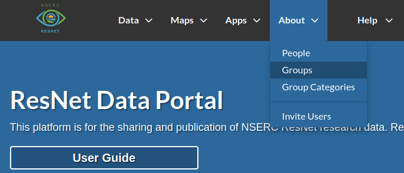
Locate the group by searching or browsing through pages.
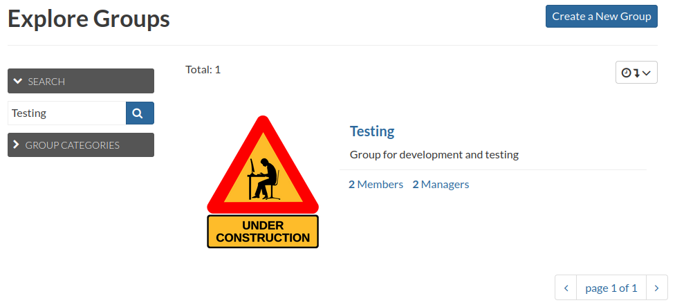
Click on a group to view it’s details.
Click Join Group to join the group.
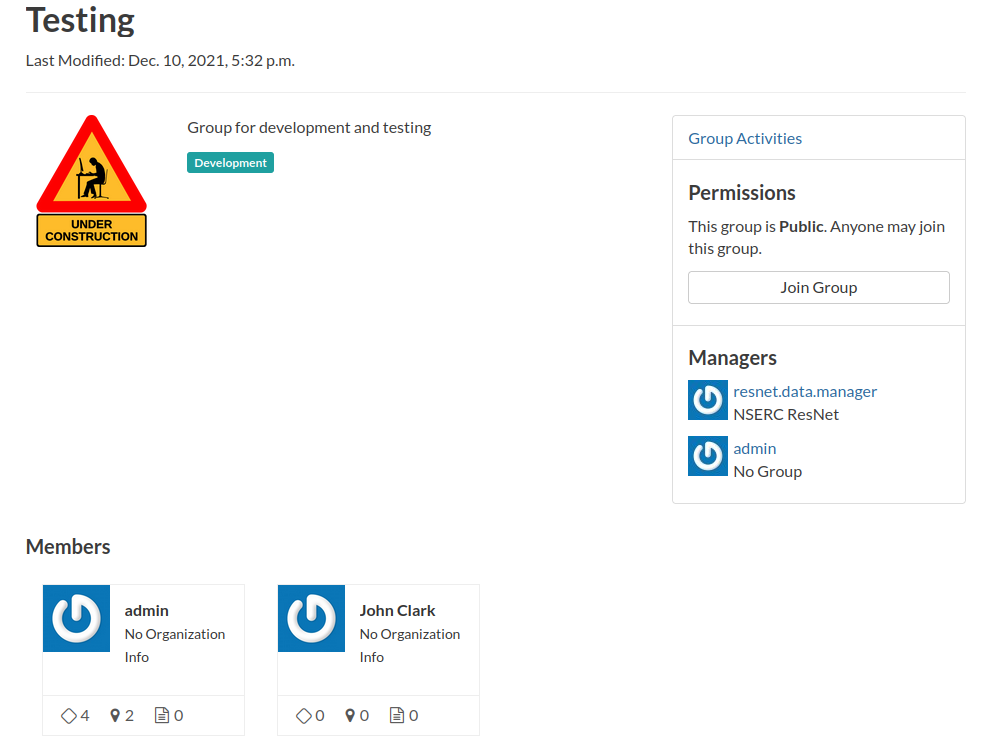